Aula 8 - Filtros IIR#
Versão 2023
Essas notas de aula podem ser compartilhadas nos termos da lincença Creative Commons CC BY-NC-ND 4.0, com propósitos exclusivamente educacionais.
Attribution-NonCommercial-NoDerivatives 4.0 International
FILTROS DIGITAIS - Projetos de Filtros Seletivos em Frequência.
Filtros IIR: Resposta ao Impulso Infinita.
Projeto baseado nos Filtros Contínuos.
Três tipos de projeto: Aproximação das derivadas, Invariância ao impulso e Transformação bilinear.
Filtros FIR: Resposta ao Impulso Finita.
\(h[n] \neq 0,\; n = 0, 1, 2, \dots, M-1\).
Filtros com fase linear.
Sempre estável
Projeto por janelas e por amostragem em frequência.
Implementação do Filtro Digital
IIR, \(y[n] = \sum_{k=0}^{\infty}x[n-k]h[k]\)
FIR, \(y[n] = \sum_{k=0}^{N-1}x[n-k]h[k]\)
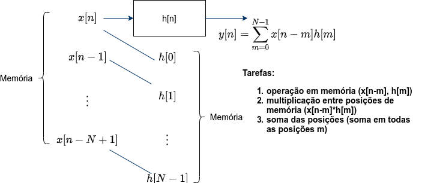
Exemplo de um filtro IIR
Equação de diferenças de um filtro IIR
Transformada z
Resposta de frequência (\(z = e^{j\omega}\))
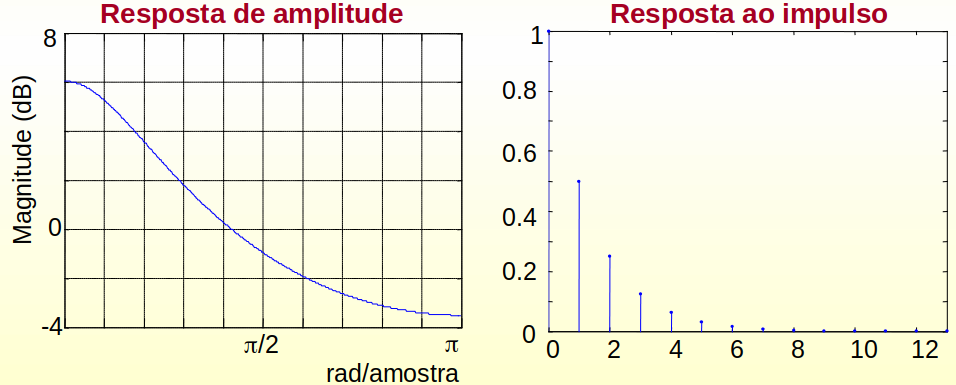
Diagrama de blocos
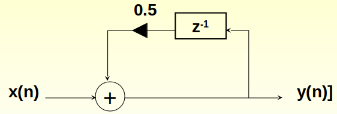
Introdução aos Filtros
Filtros:
São uma classe muito importante de sistemas lineares lineares invariantes no tempo.
São aplicados onde há necessidade de tratamento do sinal.
Função:
Deixar passar algumas componentes de frequência de um sinal e rejeitar outras.
Definição:
Um sistema que modifica as componentes de frequência de um sinal aplicado em sua entrada.
Notação:
Frequência analógica: \(\Omega (rad/s)\) e \(F (Hz)\).
limites positivos: \([0 - \infty[\)
Frequência digital: \(w\) ou \(f\).
limites positivos: \([0 - \pi]\) ou \([0 - 0.5]\)
Relação entre frequência analógica e digital:
Em que: \(F_a\) é a frequência de amostragem $\( w = \frac{\Omega}{F_a} \text{ ou } f=\frac{F}{F_a} \)$
Característica em Frequência dos Filtros Seletivos Ideais
Parâmetros
Frequência de corte
Banda de Passagem
Banda de Transição
Banda de Atenuação
Atenuação máxima na banda de passagem
Atenuação mínima na banda de atenuação
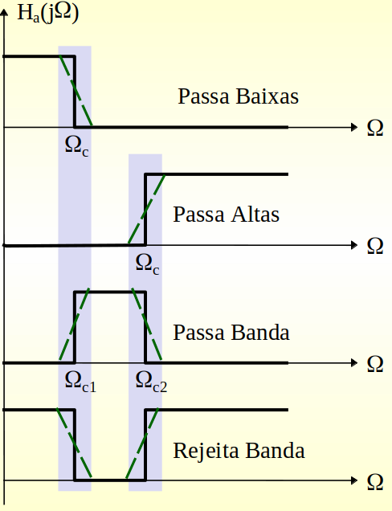
Como fazer a conversão dos “filtros” analógicos para ser representado em tempo-discreto?
Será que as condições de estabilidade e causalidade são preservadas?
Será que as especificações feitas em \(H(j\Omega)\) permanecem iguais em \(H(e^{j\omega})\)?
Representação de um Filtro Analógico Contínuo no Tempo
Função do Sistema:
Resposta ao Impulso:
Equação Linear Diferencial:
Estas três representações, acima, conduzem a três métodos de projeto diferentes
Aproximação das derivadas – (a partir da representação por equações diferenciais).
Invariância ao impulso – (a partir da representação pela resposta ao impulso).
Transformação bilinear – (a partir da resposta em frequência do sistema).
Para projetar filtros IIR o importante é conhecer o projeto clássico dos filtros seletivos de frequência contínuos no tempo.
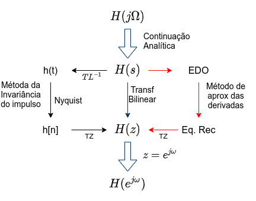
Projeto de filtros IIR
Função de Transferência de um filtro IIR
Considerações:
O objetivo é encontrar os coeficientes \(a_k\) e \(b_k\) que satisfazem determinadas especificações de projeto.
O projeto de um filtro IIR é feito, em geral, a partir de um protótipo analógico.
O filtro digital é obtido a partir de uma função de transformação do domínio “s” para o “z”.
Projeto de Filtros IIR por Aproximação das Derivadas
\(y(t)=\frac{d}{dt}x(t) \to H(s) = s\)
\(Y(z) = \frac{X(z)-z^{-1}X(z)}{T}\to H(z) = \frac{1-z^{-1}}{T} \hspace{20mm} \big\{y(nT) = \frac{x(nT) - x(nT-T)}{T} = y[n] = \frac{x[n]-x[n-1]}{T} \big\}\)
Objetivo: Aproximar a equação diferencial por uma equação de diferenças.
Transformação de \(H(s)\) em \(H(z)\)
Mapeamento do plano s no plano z:
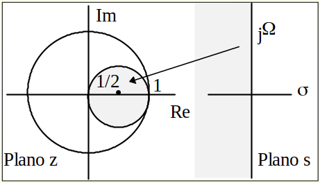
Pólos: Dentro do Círculo Unitário \(\Rightarrow\) Filtro estável e causal
Utilização: em frequências baixas.
Aplicação: Filtros Passa-baixas e Passa-banda com frequências de corte e de ressonância baixas.
Exemplo 2: Projeto de um filtro passa-baixas pelo método de Aproximação das Derivadas
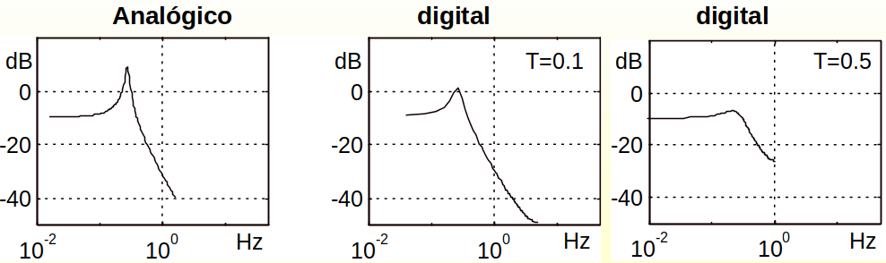
Projeto de Filtros IIR por Invariância ao Impulso
\(h[n]\) é uma cópia amostrada de \(h(t)\): \(\Rightarrow \; h[n]=h(nT) \quad n=0,1,2, \dots\)
No domínio da frequência: \(\Rightarrow \; H(F) = F_s \sum_{k=-\infty}^{\infty}H_a(F-kF_s)\)
EM QUE:
\(F_s = 1/T\) é a frequência de amostragem.
\(F_s\) deve ser grande para evitar aliasing.
Por causa do aliasing, este projeto é inadequado para os filtros passa-altas.
Expandindo o filtro analógico em frações parciais tem-se que:
\begin{equation} H(s) = \sum_{k=1}^{N}\frac{c_k}{s-p_k} ; \Leftrightarrow ; h(t) = \sum_{k=1}^{N}c_ke^{p_kt}, ; t\geq0 \tag{5}\end{equation}
Em que: \(p_k\) são os pólos de \(H(s)\)
Amostrando \(h_a(t)\) tem-se: \(h[n] = h_a(nT) = \sum_{k=1}^{N}c_ke^{p_kTn}\)
Calculando a transformada z de \(h[n]\) tem-se: \(H(z) = \sum_{k=1}^{N}\frac{c_k}{1-e^{p_kT}z^{-1}}\)
Para o projeto: os pólos de \(H(z)\) serão dados por: $\( d_k=e^{p_kT} : k= 1, 2, \dots, N \)$
Observações:
O mapeamento guia a um filtro estável pois: $\( p_k = \sigma_k + j\Omega_k \text{ e } \sigma_k<0 \; \Rightarrow \; |d_k| = e^{\sigma_kT}<1 \; \Rightarrow \; \text{filtro estável} \)$
Não é necessário determinar \(h_a(t)\)
Roteiro de Projeto
Determina-se o protótipo analógico \(H_a(s)\) de ordem \(N\).
Calcula-se os pólos \(p_k\) e os coeficientes \(c_k\) da expansão em frações parciais do filtro.
Calcula-se os pólos \(d_k\) do filtro digital, tal que: $\( d_k = e^{p_kT} : k=1,2,\dots,N \)$
Determina-se o Filtro Digital tal que: $\( H(z) = \sum_{k=1}^{N}\frac{c_k}{1-e^{p_kT}z^{-1}} \)$
Exemplo: Projeto de um filtro passa-banda pelo método de Invariância ao Impulso.#
Os pólos do Filtro Digital serão dados por: \(e^{-0.1T}e^{\pm j3T}\)
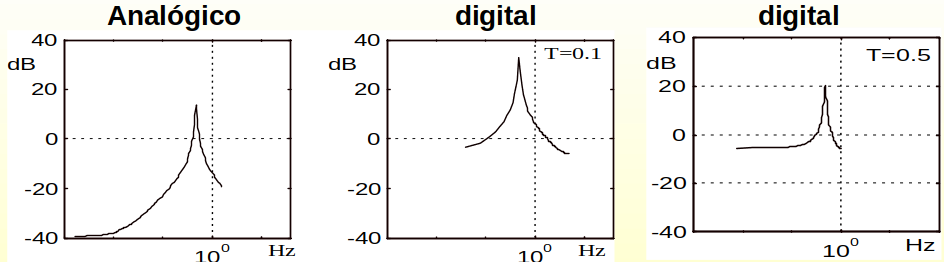
Projeto de Filtros IIR por Transformação Bilinear
Vantagem: elimina o problema de aliasing.
Utilização: todos os três tipos de filtros.
Método: é baseado na Regra de Integração do Trapézio.
Problema: apresenta distorção no eixo das frequências.
Desenvolvimento
Seja um sistema de primeira ordem com função de transferência dada abaixo: $\( H_a(s) = \frac{Y(s)}{X(s)} = \frac{b}{s+a} \; \Rightarrow \; \frac{d}{dt}y(t) + ay(t) = bx(t) \)$
A integral da derivada de \(y(t)\) é dada por: \(y(t) = \int_{t_0}^{t} y'(t)dt + y(t_0)\)
Admitindo \(t = nT\) e \(t_0 = (n-1)T\). Então, pela regra do Trapézio tem-se: $\( y[n] = \frac{T}{2}[y'[n]+y'[n-1]]+y[n-1] \)$
Substituindo a equação das derivadas para \(t = nT\) na equação anterior tem-se que: $\( \left( 1+\frac{aT}{2} \right)y[n] - \left( 1-\frac{aT}{2} \right)y[n-1] = \frac{bT}{2}[x[n]+x[n-1]] \)$
Calculando a Transformada z: $\( H(z) = \frac{Y(z)}{X(z)} = \frac{b}{\frac{2}{T}\left( \frac{1-z^{-1}}{1+z^{-1}} \right)+a} \)$
Equivalência dos filtros: $\( H_a(s) = \frac{b}{s+a} \; \Rightarrow \; H(z) = \frac{b}{\frac{2}{T}\left( \frac{1-z^{-1}}{1+z^{-1}} \right)+a} \)$
O mapeamento de s no plano z será feito por: $\( s= \frac{2}{T}\left( \frac{1-z^{-1}}{1+z^{-1}} \right) \)$
Sejam: \(z = re^{jw}\) e \(s = \sigma + j\Omega\). Substituindo na equação anterior tem-se:
\( s = \frac{2}{T} \left( \frac{r^2-1}{1+r^2+2r\cos(w)}+j\frac{2r\sin(w)}{1+r^2+2r\cos(w)} \right) \text{ se } r<1 \Rightarrow \sigma<0 \text{ Pólos dentro do círculo unitário} \)#
Seja \(r = 1\) então:
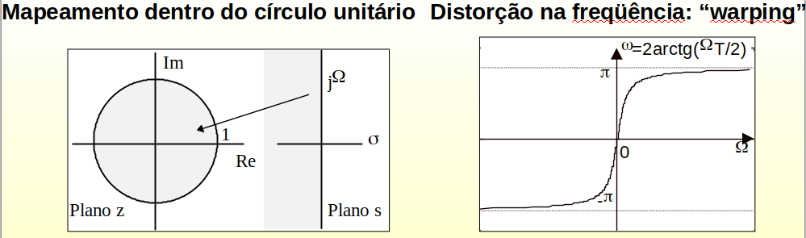
compensação - pre-warping
compensa a deformação bilinear dando mais ganho nas frequencias mais altas ou perto da frequência de corte
Projeto de um filtro passa-banda pelo método da transformação bilinear.
Portanto o filtro digital será:
Famílias de Filtros Analógicos
Técnica de Projeto de Filtros IIR consiste:
Obtenção de um filtro analógico que obedece a determinadas condições de Projeto.
Conversão de \(H(s)\) em \(H(z)\).
Família de Filtros Analógicos Típicos:
Filtro de Butterworth,
Filtro de Chebyshev: Tipo I e Tipo II,
Filtro Elíptico (ou de Cauer),
Filtro de Bessel (Fase Linear).
Não utilizado \(\Rightarrow\) Para fase linear utiliza-se filtros FIR.
Revisão no projeto clássico de filtros
Filtro de Butterworth
Apresenta uma resposta de amplitude maximamente plana na faixa de passagem. Isto é,
\( |H(j\Omega)|^2 = \frac{1}{1+\left( \frac{-s^2}{\Omega_{c}^{2}} \right)^N} = \frac{1}{1+\left( \frac{\Omega}{\Omega_{c}^{2}} \right)^{2N}} \)
onde: \(\Omega_c\) é a frequência de corte (3dB). \(N\) é a ordem do filtro.
Os pólos de \(H(j\Omega)\) são dados por: \( -\frac{s^2}{\Omega_{c}^{2}} = (-1)^{\frac{1}{N}} = e^{j(2k+1)\pi/N} \; \longrightarrow \; \begin{cases} p_k=\Omega_ce^{\frac{j\pi}{2}e^{j(2k+1)\pi/2N}} \\ k=0,1,\dots,N-1 \end{cases} \)
Estes pólos estão localizados no semi plano esquerdo do plano s e em pontos regularmente espaçados de um círculo de raio \(\Omega_c\).
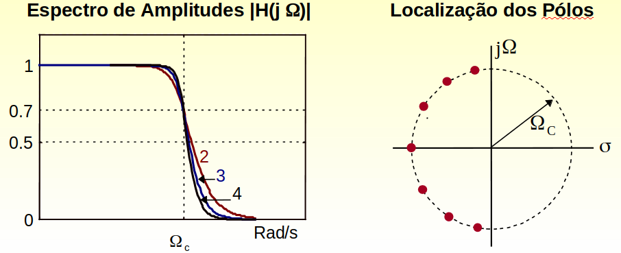
Na banda de transição: a taxa de atenuação é igual a \(20N\) dB/década.
Determinando \(N\) e \(\Omega_c\) o filtro está definido.
A ordem do filtro pode ser determinada por: \begin{equation} 1+\left( \frac{\Omega_s}{\Omega_c} \right)^{2N} = \delta^2 \tag{8}\end{equation}
\(\delta\): atenuação mínima na banda de atenuação. \(\Omega_s\): frequência de início da banda de atenuação
Exemplo
Sendo dados: \(\Omega_c = 1000\pi\), \(\Omega_s = 2000\pi\) e \(\delta_{dB} = 40\) dB. Determine a ordem do filtro de Butterworth e os seus pólos.
Cálculo da ordem do Filtro:
Cálculo dos Pólos:
Filtro de Chebyshev
Apresenta maior taxa de atenuação na banda de transição do que as outras famílias de filtros.
Tem-se dois tipos: I e II
TIPO I: Apresenta comportamento oscilatório na banda de passagem (equiripple) e monotônico na banda de atenuação.
TIPO II: Comportamento monotônico na banda de passagem e oscilatório na banda de atenuação.
Resposta de Amplitudes: Tipo I
\(\varepsilon\): parâmetro relacionado com a ondulação (ripple). \(C_N(x): \text{Polinômio de Chebyshev.}\)
Fórmula de Recursão para o cálculo de \(C_N(x)\)
em que: \(C_0(x)=1\) e \(C_1(x)=x\).
\(C_n(x)\): Varia entre \(\pm1\) para \(|x| \leq 1\). Aumenta monotonicamente para \(|x| > 1\).
Resposta de Amplitudes para o filtro de Chebyshev: Tipo I
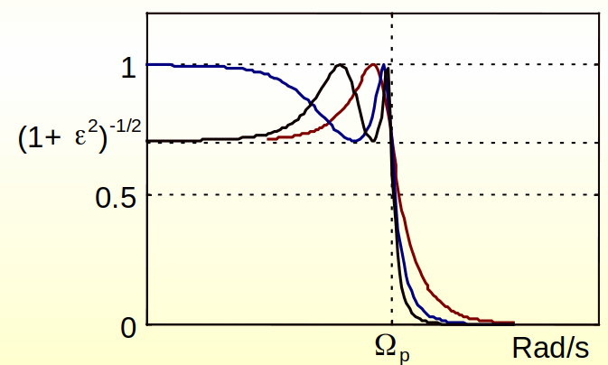
Localização dos Pólos
Os pólos do filtro de Chebyshev (tipo I) estão localizados em uma elipse cujos eixos maior (\(r_1\)) e menor (\(r_2\)) são dados por: \( r_1 = \frac{\Omega_p}{2}\left( \beta + \frac{1}{\beta} \right) \text{ e } r_2 = \frac{\Omega_p}{2}\left( \beta - \frac{1}{\beta} \right) \)
O parâmetro \(\beta\) depende de \(\varepsilon\), e é dado por: \( \beta = \left[ \sqrt{1+\varepsilon^{-2}} + \frac{1}{\varepsilon} \right]^{1/N} \)
Cálculo dos pólos: \( p_k = r_2\cos(\phi_k) + jr_1\sin(\phi_k) \)
\( \text{em que: } \phi_k = \frac{\pi}{2}+\frac{2k+1}{2N}\pi, \quad k=0,1,\dots,N-1 \)
Para o projeto dos filtros de Chebyshev são requeridos 4 parâmetros:
Freqüências da banda de passagem e de atenuação: \(\Omega_p\) e \(\Omega_s\);
Ondulação (Ripple) (\(\delta_1\))
Atenuação mínima na banda de atenuação.
O parâmetro ε é calculado através da ondulação (ripple):
\( \varepsilon^2 + 1 = \delta_1^2 \)
A ordem do filtro é determinada através de:
\( N = \frac{\log\left\{\left[\sqrt{\delta_2^2-1}+\sqrt{\delta_2^2+\varepsilon^2+1}\right]/2\varepsilon \right\}}{\log\left[ \frac{\Omega_s}{\Omega_p}+ \sqrt{\left( \frac{\Omega_s}{\Omega_p} \right)^2-1} \right]} \)
Com os valores de \(N\) e \(\varepsilon\), os pólos são determinados pelas equações anteriores.
Exemplo
Sendo dados: \(\Omega_p = 1000\pi\), \(\Omega_s = 2000\pi\), \(\delta_1 = 1 dB\) e \(\delta_2 = 40dB\). Determine a ordem do filtro de Chebyshev e os seus pólos.
Cálculo de \(\varepsilon\): $\( \varepsilon^2 + 1 = (10^{1/20})^2 \; \Rightarrow \; \varepsilon=0.5080 \)$
Cálculo da ordem do Filtro: $\( 20\log(\delta_2) = 40 \; \Rightarrow \; \delta_2=100 \quad N=\frac{\log(196,54)}{\log(2+\sqrt{3})}=4 \)$
Cálculo dos Pólos: $\( \begin{split} \beta &= 1.429 \\ r_1 &= 1.06\Omega_p \\ r_2 &= 0.365\Omega_p \end{split} \; \Rightarrow \; \begin{cases} p_{0,2} = -0.1397\Omega_p \pm j 0.979\Omega_p \\ p_{1,3} = -0.337\Omega_p \pm j 0.4056\Omega_p \end{cases} \)$
Filtro Elíptico
Apresenta comportamento oscilatório (equiripple) tanto na banda de passagem quanto na banda de atenuação.
A resposta em amplitudes é caracterizada pela equação: \begin{equation} |H(j\Omega)|^2 = \frac{1}{1+\varepsilon^2U_N^2\left(\frac{\Omega}{\Omega_p}\right)} \tag{17}\end{equation}
\(\varepsilon\): Relacionado com a ondulação (ripple). \(U_N(x)\): Função Elíptica Jacobiana (Tabelada em Zverev). Vantagens: Fornece ordem menor do que os outros filtros e também banda de transição menor.
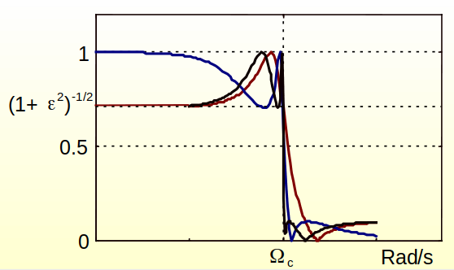
Filtro de Bessel
Apresenta fase linear dentro da banda passante. Na conversão para o digital esta característica é perdida, por isso não é utilizado. Em seu lugar utiliza-se filtros FIR.
São caracterizados pela seguinte função de transferência:
\( H(s) = \frac{1}{B_N(s)} \)
Em que: \(B_N(s)\) é o polinômio de Bessel de ordem \(N\).
\( B_N(s) = \sum_{k=0}^{N}a_ks^k \text{ em que: }a_k=\frac{(2N-k)!}{2^{N-k}k!(N-k)!} \)
Equação de Recursão:
\(\begin{split}B_N(s) = (2N-1)B_{N-1}(s) + s^2B_{N-2}(s) \\ \text{ em que: } B_0(s)=1 \text{ e } B_1(s) = s+1 \end{split} \)
Exemplo de Projeto de Filtros Digitais
Projeto de um filtro digital passa-baixas com as seguintes especificações:
Família de Butterworth,
Banda de passagem: \(0\) - \(1 kHz\) e atenuação máxima \(1 dB\).
Banda de atenuação: A partir de \(3 kHz\) e atenuação mínima de \(10 dB\).
Frequência de amostragem: \(10 kHz\)
Projeto por equação de diferenças.
Projeto por transformação bilinear com pre-warping.
Equação de Diferenças
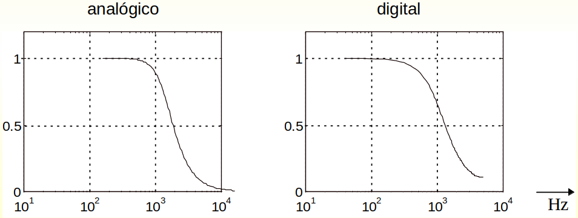
Transformação Bilinear
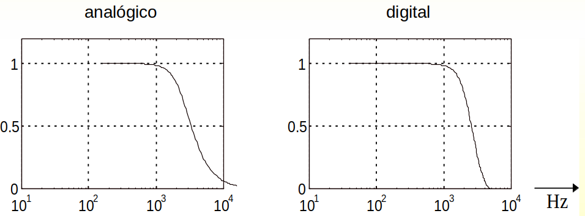